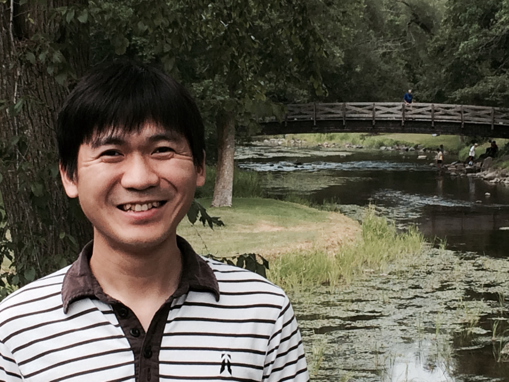

Yinbang Lin, 林胤榜

I am co-organizing Tongji Algebraic Geometry Seminar.
Research
I am currently an assistant professor at Tongji University.
My reserch interests are in moduli of sheaves, derived categories, and enumerative geometry.
Here are my publications and preprints.
- Gromov--Witten/Pandharipande--Thomas correspondence via conifold transitions, arXiv:2310.18170.
- Shatz strata in versal deformation spaces, arXiv:2207.11853.
- Gaeta resolutions and strange duality conjecture over rational surfaces, joint with Thomas Goller, arXiv:2205.14827.
- Decorated sheaves and morphisms in tilted hearts, joint with Sz-Sheng Wang and Bingyu Xia, arXiv:2104.12618, submitted.
- Rank-one sheaves and stable pairs on surfaces, joint with Thomas Goller, Advances in Mathematics 401 (2022), https://doi.org/10.1016/j.aim.2022.108322, arXiv:1907.05180. The accepted version is also available here.
- A note on 1-cycles on the moduli space of rank 2 bundles over a curve, joint with Duo Li and Xuanyu Pan, C. R. Math. Acad. Sci. Paris 357 (2019), no. 2, 209-211.
- Moduli spaces of stable pairs, Pacific Journal of Mathematics 294 (2018), no. 1, 123-158, arXiv:1512.03091.
- Nef cones of Hilbert scheme of points on surfaces, joint with B. Bolognese, J. Huizenga, E. Riedl, B. Schmidt, M. Woolf and X. Zhao, Algebra Number Theory 10 (2016), no. 4, 907-930.
Students
- Haotian Zuo(左皓天)
- Jonathan Basalyga(倪思)
- Yijia Li(李益佳)
Undergraduates
- Shimin Hu(胡诗敏), 2023
- Mutian Lv(吕牧天), 2023
- Yuli Yang(杨预立), 2021
- You Zhou(周游), 2021
Teaching
- Fall 2023, Representations of finite groups (群表示论).
- Fall 2023, Linear algebra (2023秋, 线性代数).
- Spring 2022, Functions of One Complex Variable (复变函数).
- Spring 2022, Abstract Algebra (抽象代数).
- Fall 2021, Linear Algebra. 2021年秋, 线性代数.
- Fall 2021, Abstract Algebra. 2021年秋, 抽象代数.
- Fall 2020, Instructor, Abstract Algebra.
- Spring 2020, Instructor, Complex Analysis.
- Fall 2019, Instructor, Linear Algebra (for engineers).
From Fall 2010 to Spring 2016, I was a Teaching Assistant at Department of Mathematics, Northeastern University.
- Spring 2016, Teaching Assistant, Probability and Statistics, MATH 3081.
- Fall 2015, Instructor, Mathematical Thinking, MATH 1215.
- Spring 2015, Instructor, Mathematical Thinking, MATH 1215.
- Fall 2014, Instructor, Mathematical Thinking, MATH 1215.
- Spring 2014, Teaching Assistant, Calculus 1, MATH 1241.
- Fall 2013, Instructor, Calculus 1, MATH 1241.
- Spring 2013, Teaching Assistant, Calculus 1, MATH 1241.
- Fall 2012 Teaching Assistant, Calculus 1, MATH 1241.
- Spring 2012, Recitation Leader, Calculus 3 for Sci/Engr, MATH 2321.
- Fall 2011, Recitation Leader, Calculus 3 for Sci/Engr, MATH 2321.
- Spring 2011, Teaching Assistant, Real Analysis, MATH 3150.
- Fall 2010, Teaching Assistant, Group Theory, MATH 3175.